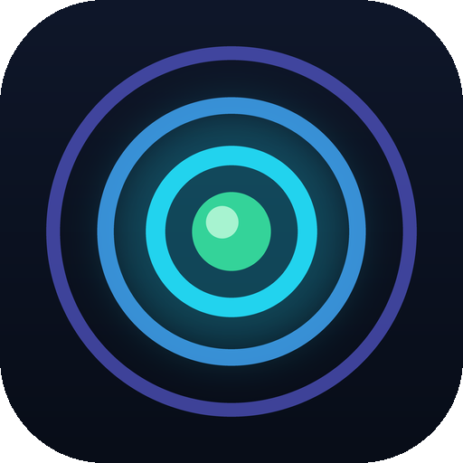

TapCore
Tự động hoá Lua tương thích AutoTouch cho iOS 15–16 rootless
Thêm nguồn vào Sileo
Mở Sileo và thêm nguồnHoặc thêm thủ công trong Sileo → Sources → + :
https://langtoi.github.io/tapcore/
Sau đó tìm TapCore và bấm Get.
Sau khi cài
- App TapCore xuất hiện trên màn hình chính.
- Web Studio:
http://<IP iPhone>:8080(cổng 8088 nếu 8080 bận). - Script Lua nằm ở
/var/jb/var/mobile/Library/AutoTouch/Scripts, chạysv.luađể mở cổng 3000 cho BAS. - Bản cũ ghost-atd / GhostStudio được tự gỡ khi cài.
Tính năng
- touchDown/Move/Up, phím cứng, inputText, copyText
- getColor, getColors, findColors, findImage
- OCR bằng Apple Vision, ghi thao tác chạm thành Lua
- execute, openURL, appKill, lưu và xoá ảnh Photos